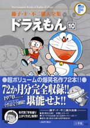

| |

＜1970年度生まれの
学年誌掲載集＞
定価：本体1,800円＋税
A5判／760ページ
好評発売中！
★は初めて単行本に収録される
作品です。
※収録内容は変更になる
場合があります。

|
クルリン自動車（小学一年生1977年4月号）
むりやり貯金箱（小学一年生1977年5月号）
サーカスぐつ（小学一年生1977年6月号）
水族館ガス（小学一年生1977年7月号）
防水折り紙（小学一年生1977年8月号）
夢まくら（小学一年生1977年9月号）
びっくり箱ステッキ（小学一年生1977年10月号）
ばくはつこしょう（小学一年生1977年11月号）
サンタえんとつ（小学一年生1977年12月号）
おかしなおかしなかさ（小学一年生1978年1月号）
兄弟シール（小学一年生1978年2月号）
★はるかぜうちわ（小学一年生1978年3月号）
ラジコンでやっつけろ（小学二年生1978年4月号）
イメージ灯（小学二年生1978年5月号）
植物ペン（小学二年生1978年6月号）
ウルトラスーパー電池（小学二年生1978年7月号）
ブルートレインはぼくの家
（小学二年生1978年8月号）
サウンドカメラ（小学二年生1978年9月号）
コース決定機（小学二年生1978年10月号）
木の葉でお買い物（小学二年生1978年11月号）
ノゾミルじゅう（小学二年生1978年12月号）
オコノミボックス（小学二年生1979年1月号）
乗り物アクセサリー（小学二年生1979年2月号）
ごくうリング（小学二年生1979年3月号）
スーパージャイアン（小学三年生1979年4月号）
わりこみビデオでテレビ出演
（小学三年生1979年5月号）
念写カメラマン（小学三年生1979年6月号）
恐竜が出た!?（小学三年生1979年7月号）
ミニハウスでさわやかな夏
（小学三年生1979年8月号）
万能テントですてきなキャンプ
（小学三年生1979年9月号）
みたままベレーで天才画家
（小学三年生1979年10月号）
しあわせをよぶ青い鳥（小学三年生1979年11月号）
オモイコミン（小学三年生1979年12月号）
長い長いお正月（小学三年生1980年1月号）
大あばれ、手作り巨大ロボ
（小学三年生1980年2月号）
精霊よびだしうでわ（小学三年生1980年3月号）
フクロマンスーツ（小学四年生1980年4月号）
ヒミツゲンシュ犬（小学四年生1980年5月号） |
ポカリ＝百円（小学四年生1980年6月号）
災難予報機（小学四年生1980年7月号）
竜宮城の八日間（小学四年生1980年8月号）
つめあわせオバケ（小学四年生1980年9月号）
温泉ロープでいい湯だな
（小学四年生1980年10月号）
異説クラブメンバーズバッジ
（小学四年生1980年11月号）
うつしっぱなしミラー
（小学四年生1980年12月号）
オトシ玉（小学四年生1981年1月号）
サイオー馬（小学四年生1981年2月号）
のび太は世界にただ一匹
（小学四年生1981年3月号）
歩け歩け月までも（小学五年生1981年4月号）
羽アリのゆくえ（小学五年生1981年5月号）
★からだねん土でスマートになろう！
（小学五年生1981年6月号）
大富豪のび太（小学五年生1981年7月号）
恐竜さん日本へどうぞ（小学五年生1981年8月号）
うら山のウサギ怪獣（小学五年生1981年9月号）
あの道この道楽な道（小学五年生1981年10月号）
タイムカプセル（小学五年生1981年11月号）
むすびの糸（小学五年生1981年12月号）
水たまりのピラルク（小学五年生1982年1月号）
10分おくれのエスパー
（小学五年生1982年2月号）
夢はしご（小学五年生1982年3月号）
恋するドラえもん（小学六年生1982年4月号）
プラモが大脱走（小学六年生1982年5月号）
地平線テープ（小学六年生1982年6月号）
神さまごっこ（小学六年生1982年7月号）
思いだせ！ あの日の感動
（小学六年生1982年8月号）
のび太航空（小学六年生1982年9月号）
しずちゃんの心の秘密（小学六年生1982年10月号）
フィーバー!! ジャイアンF・C
（小学六年生1982年11月号）
ユーレイ暮らしはやめられない
（小学六年生1982年12月号）
男は決心！（小学六年生1983年1月号）
しずちゃんとスイートホーム
（小学六年生1983年2月号）
のび太もたまには考える
（小学六年生1983年3月号） |